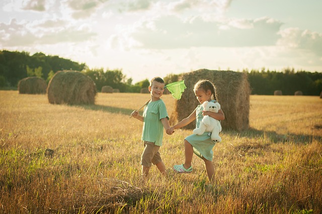
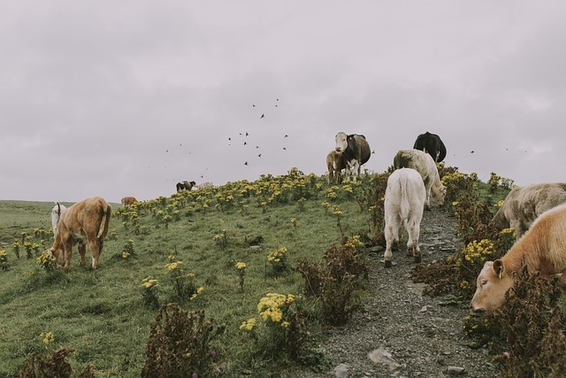
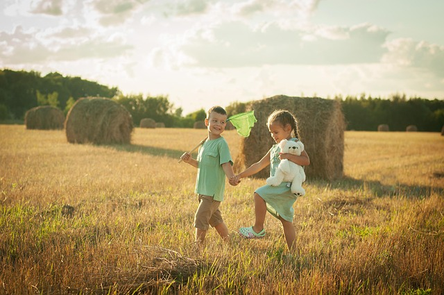
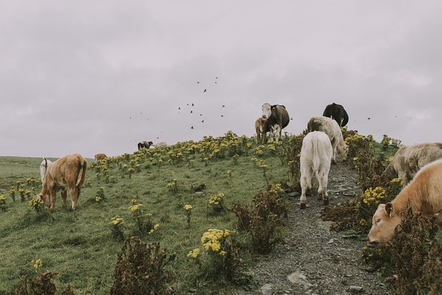
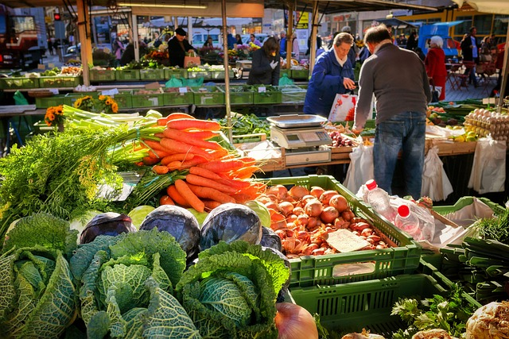
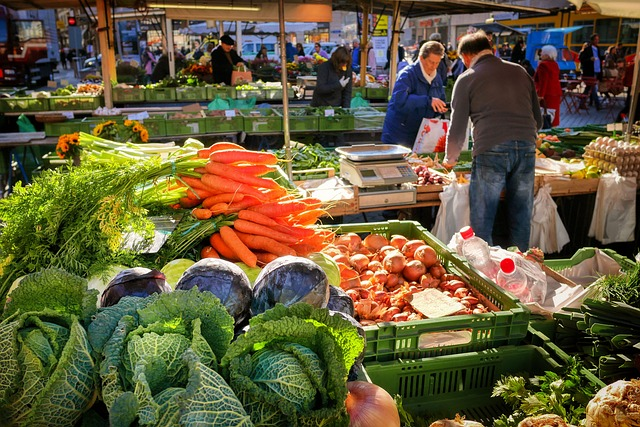

Para que este site foi criado?
Este site foi criado para celebrar as igualdades e diferenças entre o campo e a cidade, mostrando como a agricultura e a cultura urbana se entrelaçam. Através de imagens, vídeos e informações, buscamos destacar a importância da conexão entre esses dois mundos, promovendo um diálogo enriquecedor e inspirador.
Campo
A Vida no Campo: Harmonia e Simplicidade
O setor rural é atualmente um dos mais importantes para a vida urabana,já que boa parte dos produtos naturais são produzidos no setor agropecuario/rural. Claro que este setor conta com


Cidade
A Vida na Cidade: Movimento, Diversidade e Oportunidade

Festejando
A Conexão Campo-Cidade: Unindo Tradição e Modernidade
No campo, a natureza se apresenta em sua forma mais pura, com rios, árvores e uma fauna diversificada. A agricultura, base de muitas economias, é o alicerce que sustenta a vida rural. Aqui, cada estação do ano traz um novo ciclo, um novo aprendizado. O trabalho com a terra é o reflexo do respeito à natureza e à paciência. O campo ensina a viver de forma mais simples, mas profunda, valorizando cada detalhe do que a terra oferece.
A cidade, por sua vez, é o símbolo do encontro de culturas e do movimento incessante da vida. A urbanização trouxe mais conforto, comunicação e oportunidades de desenvolvimento. Nela, o espírito de inovação e a busca pelo futuro nunca param. As ruas da cidade são um reflexo das mudanças constantes que, em muitos casos, começam nos campos. As tecnologias agrícolas, que ajudam a aumentar a produtividade e a sustentabilidade, frequentemente têm origem nas inovações urbanas.
A conexão entre o campo e a cidade é essencial para que um mundo sustentável e equilibrado seja possível. O campo precisa da cidade para escoar seus produtos e obter tecnologia e conhecimento. A cidade, por sua vez, depende daquilo que o campo oferece: alimentos frescos, recursos naturais e um ritmo que, muitas vezes, serve como antídoto à sua correria.
Notícias do Dia a Dia
Fique por dentro das últimas notícias sobre o campo e a cidade. Explore os principais acontecimentos e tendências que conectam esses dois mundos.
Notícias do Campo
Notícias da Cidade
Galeria
 




 
